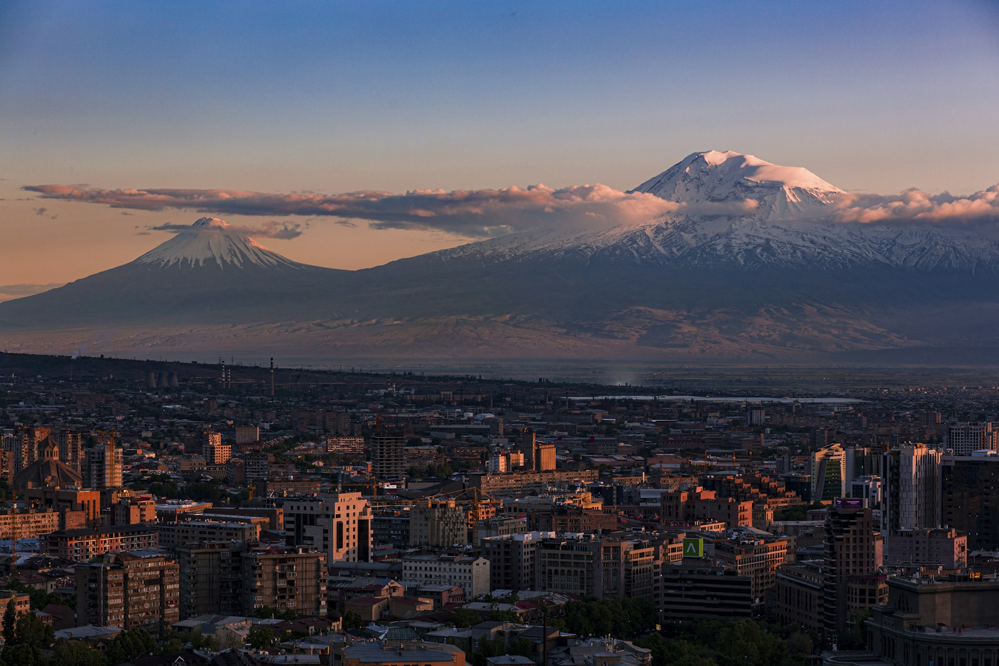
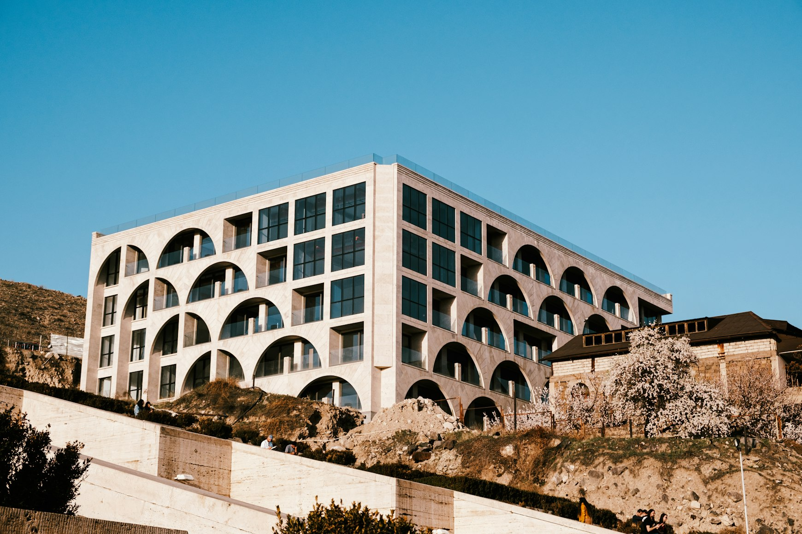
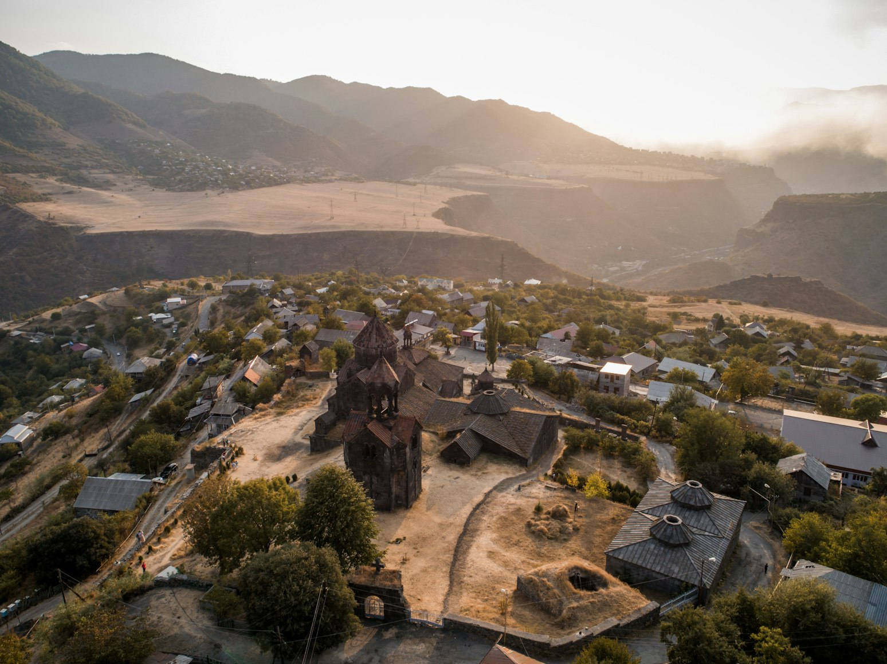
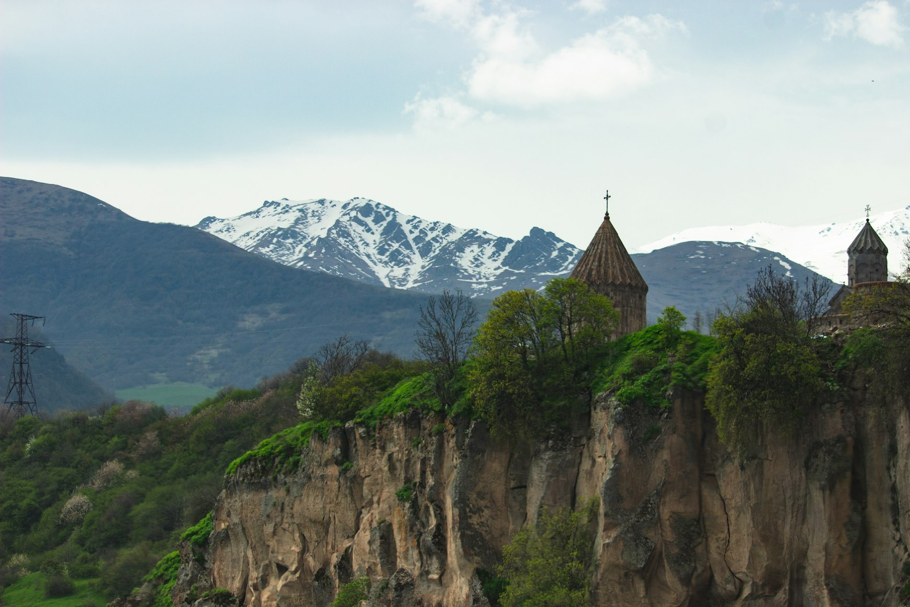

Armenia · Architecture
The Volcanic Architecture of Armenia
Churches rise from black cliffs using the same volcanic stone as the mountains behind them. Entire cities appear carved from ash-colored rock. Monasteries seem less constructed than fused into canyons, caves, and plateaus shaped by tectonic violence millions of years before Christianity arrived.
This is what makes Armenia architecturally unusual.
Not simply age.
Not religion.
Material.
The country sits on a volcanic highland where basalt, tuff, and dark lava stone have shaped architecture for centuries. In many places, the buildings do not contrast with the terrain the way European architecture often does.
They dissolve into it.
I · The Capital Yerevan: The City Built From Volcanic Light
At first glance, Yerevan does not look volcanic.
The city glows pink at sunset. Cafés spill into wide boulevards. Soviet avenues open toward views of Mount Ararat in the distance.
But nearly everything in central Yerevan is built from volcanic tuff.
The stone changes color depending on light: dusty rose in the evening, pale gold at noon, gray during winter rain. Entire apartment blocks, government buildings, staircases, and arches seem to absorb sunlight rather than reflect it.
Unlike concrete or polished marble, volcanic tuff carries softness and erosion visibly on its surface. Corners wear down. Texture deepens. Buildings age physically instead of remaining visually frozen.
Even modern Armenia often looks ancient because the stone itself already feels geological.

II · The Mountain Church Geghard: Architecture Carved Into the Mountain
Nowhere explains Armenia's volcanic architecture more clearly than Geghard Monastery.
Parts of the monastery are not constructed beside the mountain.
They are carved directly inside it.
The deeper chambers disappear into black volcanic rock where candlelight barely reaches the walls. Water drips slowly through the stone ceiling into medieval basins polished by centuries of hands. The air smells damp and mineral-heavy.
It becomes difficult to understand where architecture ends and geology begins.
This is one of the reasons architects find Armenia so fascinating.
Much of European religious architecture imposes itself onto the landscape.
Geghard feels excavated from it.
The monastery does not dominate the canyon.
It belongs to it.

III · The Canyon Garni and the Basalt Geometry of the Canyon
Near Garni Temple, the landscape itself begins resembling architecture.
Below the pagan temple, the Garni Gorge is lined with enormous basalt columns formed by ancient lava flows. The formations rise vertically from the canyon walls in near-perfect hexagonal patterns, often called the “Symphony of Stones.”
From a distance, the cliffs resemble giant organ pipes or unfinished brutalist architecture.
The effect is strangely modern despite being entirely geological.
